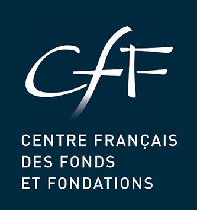

<nav class="navbar navbar-expand-lg navbar-light bg-light">
  <button class="navbar-toggler" type="button" data-toggle="collapse" data-target="#navbarTogglerDemo03"
    aria-controls="navbarTogglerDemo03" aria-expanded="false" aria-label="Toggle navigation">
    <span class="navbar-toggler-icon"></span>
  </button>
  <a class="navbar-brand" href="https://www.centre-francais-fondations.org">
    
  </a>

  <div class="collapse navbar-collapse" id="navbarTogglerDemo03">
    <ul class="navbar-nav mr-auto mt-2 mt-lg-0">
      <li class="nav-item active">
        <a class="nav-link" routerLink="">Accueil<span class="sr-only">(current)</span></a>
      </li>
      <li class="nav-item">
        <a class="nav-link" href="https://airtable.com/shrBtEOYq6HubrmaS" target="_blank">Besoin d’un soutien</a>
      </li>
      <li class="nav-item">
        <a class="nav-link" href="https://airtable.com/shr0VM0fwSEa82j6X" target="_blank">Offre d’un soutien</a>
      </li>
      <li class="nav-item">
        <a class="nav-link" href="https://airtable.com/shrG9RZMcmLpB75fK" target="_blank">Restez informés</a>
      </li>
    </ul>
  </div>
</nav>
